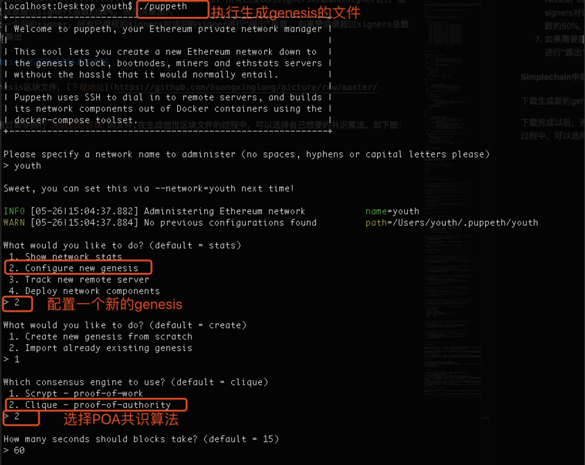

Consensus mechanism is an algorithm for distributed consensus of blockchain transactions. Due to high or low network latency in a point-to-point network, the order of transactions received by each node may be different, therefore, the blockchain system needs to design a mechanism to enable nodes to reach a consensus on the order of transactions that occur at about the same time. This is the consensus mechanism.
PoW consensus algorithm
PoW proves that you have completed the characteristics of the corresponding work hash function through the work results:
- Collision-free, that is, there is no case where the input values are different and the hash values are the same after hash transformation.
- Concealment, that is, given a hash value, it is infeasible to reverse the input value.
- There is no better method than exhaustive to make hash values fall within a specific range. POW algorithm principle: the node searches for the appropriate hash value by constantly changing random numbers. When the node first calculates the appropriate hash value, if the packaged block passes the verification of other consensus nodes, it is added to the blockchain.
Introduction to Scrypt algorithm
The mining algorithm adopted by Simplechain is Scrypt algorithm. Scrypt is a memory-dependent POW algorithm that conforms to the PoW consensus mechanism. The Scrypt algorithm also needs to calculate the hash value, but more memory resources are needed in the Scrypt calculation process.
Scrypt algorithm process
Several functions used by the Scrypt algorithm are interlocking. This section describes the calling order of the functions from inside to outside.
Salsa20/8
#define R(a,b) (((a) << (b)) | ((a) >> (32 - (b))))
void salsa20_word_specification(uint32 out[16],uint32 in[16])
{
int i;
uint32 x[16];
for (i = 0;i < 16;++i) x[i] = in[i];
for (i = 8;i > 0;i -= 2) {
x[ 4] ^= R(x[ 0]+x[12], 7); x[ 8] ^= R(x[ 4]+x[ 0], 9);
x[12] ^= R(x[ 8]+x[ 4],13); x[ 0] ^= R(x[12]+x[ 8],18);
x[ 9] ^= R(x[ 5]+x[ 1], 7); x[13] ^= R(x[ 9]+x[ 5], 9);
x[ 1] ^= R(x[13]+x[ 9],13); x[ 5] ^= R(x[ 1]+x[13],18);
x[14] ^= R(x[10]+x[ 6], 7); x[ 2] ^= R(x[14]+x[10], 9);
x[ 6] ^= R(x[ 2]+x[14],13); x[10] ^= R(x[ 6]+x[ 2],18);
x[ 3] ^= R(x[15]+x[11], 7); x[ 7] ^= R(x[ 3]+x[15], 9);
x[11] ^= R(x[ 7]+x[ 3],13); x[15] ^= R(x[11]+x[ 7],18);
x[ 1] ^= R(x[ 0]+x[ 3], 7); x[ 2] ^= R(x[ 1]+x[ 0], 9);
x[ 3] ^= R(x[ 2]+x[ 1],13); x[ 0] ^= R(x[ 3]+x[ 2],18);
x[ 6] ^= R(x[ 5]+x[ 4], 7); x[ 7] ^= R(x[ 6]+x[ 5], 9);
x[ 4] ^= R(x[ 7]+x[ 6],13); x[ 5] ^= R(x[ 4]+x[ 7],18);
x[11] ^= R(x[10]+x[ 9], 7); x[ 8] ^= R(x[11]+x[10], 9);
x[ 9] ^= R(x[ 8]+x[11],13); x[10] ^= R(x[ 9]+x[ 8],18);
x[12] ^= R(x[15]+x[14], 7); x[13] ^= R(x[12]+x[15], 9);
x[14] ^= R(x[13]+x[12],13); x[15] ^= R(x[14]+x[13],18);
}
for (i = 0;i < 16;++i) out[i] = x[i] + in[i];
}
scryptBlockMix
Parameters:
r Block size parameter.
Input:
B[0] || B[1] || ... || B[2 * r - 1]
Input octet string (of size 128 * r octets),
treated as 2 * r 64-octet blocks,
where each element in B is a 64-octet block.
Output:
B'[0] || B'[1] || ... || B'[2 * r - 1]
Output octet string.
Steps:
1. X = B[2 * r - 1]
2. for i = 0 to 2 * r - 1 do
T = X xor B[i]
X = Salsa (T)
Y[i] = X
end for
3. B' = (Y[0], Y[2], ..., Y[2 * r - 2],
Y[1], Y[3], ..., Y[2 * r - 1])
scryptROMix
Input:
r Block size parameter.
B Input octet vector of length 128 * r octets.
N CPU/Memory cost parameter, must be larger than 1,
a power of 2, and less than 2^(128 * r / 8).
Output:
B' Output octet vector of length 128 * r octets.
Steps:
1. X = B
2. for i = 0 to N - 1 do
V[i] = X
X = scryptBlockMix (X)
end for
3. for i = 0 to N - 1 do
j = Integerify (X) mod N
where Integerify (B[0] ... B[2 * r - 1]) is defined
as the result of interpreting B[2 * r - 1] as a
little-endian integer.
T = X xor V[j]
X = scryptBlockMix (T)
end for
4. B' = X
scrypt
Input:
P Passphrase, an octet string.
S Salt, an octet string.
N CPU/Memory cost parameter, must be larger than 1,
a power of 2, and less than 2^(128 * r / 8).
r Block size parameter.
p Parallelization parameter, a positive integer
less than or equal to ((2^32-1) * hLen) / MFLen
where hLen is 32 and MFlen is 128 * r.
dkLen Intended output length in octets of the derived
key; a positive integer less than or equal to
(2^32 - 1) * hLen where hLen is 32.
Output:
DK Derived key, of length dkLen octets.
Steps:
1. Initialize an array B consisting of p blocks of 128 * r octets
each:
B[0] || B[1] || ... || B[p - 1] =
PBKDF2-HMAC-SHA256 (P, S, 1, p * 128 * r)
2. for i = 0 to p - 1 do
B[i] = scryptROMix (r, B[i], N)
end for
3. DK = PBKDF2-HMAC-SHA256 (P, B[0] || B[1] || ... || B[p - 1],
1, dkLen)
In the mining algorithm, the selected parameters are:
- P：block header;
- S：block header;
- N：fixed as 1024;
- r：fixed as 1;
- p：fixed as 1;
- dkLen：fixed to 32, that is, the output length is 32 bytes.
Therefore, the hash value of the block header of the Wright coin is powhash = scrypt(blockheader, blockheader, 1024, 1, 1, 32). You can refer to the Go language version for obtaining the block header hash in Wright coin.
// Copyright (c) 2013-2016 The btcsuite developers
// Use of this source code is governed by an ISC
// license that can be found in the LICENSE file.
package wire
import (
"bytes"
"io"
"time"
"golang.org/x/crypto/scrypt"
"github.com/ltcsuite/ltcd/chaincfg/chainhash"
)
// MaxBlockHeaderPayload is the maximum number of bytes a block header can be.
// Version 4 bytes + Timestamp 4 bytes + Bits 4 bytes + Nonce 4 bytes +
// PrevBlock and MerkleRoot hashes.
const MaxBlockHeaderPayload = 16 + (chainhash.HashSize * 2)
// BlockHeader defines information about a block and is used in the bitcoin
// block (MsgBlock) and headers (MsgHeaders) messages.
type BlockHeader struct {
// Version of the block. This is not the same as the protocol version.
Version int32
// Hash of the previous block header in the block chain.
PrevBlock chainhash.Hash
// Merkle tree reference to hash of all transactions for the block.
MerkleRoot chainhash.Hash
// Time the block was created. This is, unfortunately, encoded as a
// uint32 on the wire and therefore is limited to 2106.
Timestamp time.Time
// Difficulty target for the block.
Bits uint32
// Nonce used to generate the block.
Nonce uint32
}
// blockHeaderLen is a constant that represents the number of bytes for a block
// header.
const blockHeaderLen = 80
// BlockHash computes the block identifier hash for the given block header.
func (h *BlockHeader) BlockHash() chainhash.Hash {
// Encode the header and double sha256 everything prior to the number of
// transactions. Ignore the error returns since there is no way the
// encode could fail except being out of memory which would cause a
// run-time panic.
buf := bytes.NewBuffer(make([]byte, 0, MaxBlockHeaderPayload))
_ = writeBlockHeader(buf, 0, h)
return chainhash.DoubleHashH(buf.Bytes())
}
// PowHash returns the litecoin scrypt hash of this block header. This value is
// used to check the PoW on blocks advertised on the network.
func (h *BlockHeader) PowHash() (*chainhash.Hash, error) {
var powHash chainhash.Hash
buf := bytes.NewBuffer(make([]byte, 0, MaxBlockHeaderPayload))
_ = writeBlockHeader(buf, 0, h)
scryptHash, err := scrypt.Key(buf.Bytes(), buf.Bytes(), 1024, 1, 1, 32)
if err != nil {
return nil, err
}
copy(powHash[:], scryptHash)
return &powHash, nil
}
// BtcDecode decodes r using the bitcoin protocol encoding into the receiver.
// This is part of the Message interface implementation.
// See Deserialize for decoding block headers stored to disk, such as in a
// database, as opposed to decoding block headers from the wire.
func (h *BlockHeader) BtcDecode(r io.Reader, pver uint32, enc MessageEncoding) error {
return readBlockHeader(r, pver, h)
}
// BtcEncode encodes the receiver to w using the bitcoin protocol encoding.
// This is part of the Message interface implementation.
// See Serialize for encoding block headers to be stored to disk, such as in a
// database, as opposed to encoding block headers for the wire.
func (h *BlockHeader) BtcEncode(w io.Writer, pver uint32, enc MessageEncoding) error {
return writeBlockHeader(w, pver, h)
}
// Deserialize decodes a block header from r into the receiver using a format
// that is suitable for long-term storage such as a database while respecting
// the Version field.
func (h *BlockHeader) Deserialize(r io.Reader) error {
// At the current time, there is no difference between the wire encoding
// at protocol version 0 and the stable long-term storage format. As
// a result, make use of readBlockHeader.
return readBlockHeader(r, 0, h)
}
// Serialize encodes a block header from r into the receiver using a format
// that is suitable for long-term storage such as a database while respecting
// the Version field.
func (h *BlockHeader) Serialize(w io.Writer) error {
// At the current time, there is no difference between the wire encoding
// at protocol version 0 and the stable long-term storage format. As
// a result, make use of writeBlockHeader.
return writeBlockHeader(w, 0, h)
}
// NewBlockHeader returns a new BlockHeader using the provided version, previous
// block hash, merkle root hash, difficulty bits, and nonce used to generate the
// block with defaults for the remaining fields.
func NewBlockHeader(version int32, prevHash, merkleRootHash *chainhash.Hash,
bits uint32, nonce uint32) *BlockHeader {
// Limit the timestamp to one second precision since the protocol
// doesn't support better.
return &BlockHeader{
Version: version,
PrevBlock: *prevHash,
MerkleRoot: *merkleRootHash,
Timestamp: time.Unix(time.Now().Unix(), 0),
Bits: bits,
Nonce: nonce,
}
}
// readBlockHeader reads a bitcoin block header from r. See Deserialize for
// decoding block headers stored to disk, such as in a database, as opposed to
// decoding from the wire.
func readBlockHeader(r io.Reader, pver uint32, bh *BlockHeader) error {
return readElements(r, &bh.Version, &bh.PrevBlock, &bh.MerkleRoot,
(*uint32Time)(&bh.Timestamp), &bh.Bits, &bh.Nonce)
}
// writeBlockHeader writes a bitcoin block header to w. See Serialize for
// encoding block headers to be stored to disk, such as in a database, as
// opposed to encoding for the wire.
func writeBlockHeader(w io.Writer, pver uint32, bh *BlockHeader) error {
sec := uint32(bh.Timestamp.Unix())
return writeElements(w, bh.Version, &bh.PrevBlock, &bh.MerkleRoot,
sec, bh.Bits, bh.Nonce)
}
POA consensus algorithm
Background of POA generation
If you want to use Simplechain to build a private chain with lower transaction costs, lower transaction latency, and higher concurrency, also have full control (meaning lower probability of being attacked). Currently, Simplechain cannot meet the requirements by using PoW.
First of all, pow has a 51% attack problem. Malicious miners who exceed 51% of the total network computing power can basically fully control the entire network. Because the chain cannot be changed, the data that has been linked cannot be changed, but malicious miners can also do some DoS attacks to prevent legitimate transactions from being linked, considering that absenteeism with the same creation block can join your network, potential security risks will exist for a long time.
Secondly, a large amount of PoW power resource consumption also needs to be considered as follow-up cost. PoS can solve some Pow problems, such as saving power and protecting 51% of attacks to a certain extent (malicious absenteeism will be punished), but there are still deficiencies in control and security considerations, because PoS still allows any eligible absenteeism to join.
Features of POA
- PoA relies on the default authorized nodes (signers) to generate blocks.
- A new signer can be elected by an authorized signer (voting more than 50%) to join the new signer.
- Even if a malicious signer exists, it can only attack one of the consecutive blocks (the number is (SIGNER_COUNT / 2) +1). During this period, other signers can vote to kick the malicious signer.
- You can specify the time when the block is generated.
The workflow of POA is as follows
- Specify a group of initially authorized signers in the creation block. All addresses are stored in the Extra field of the creation block.
- After mining is started, the group of signers begin to sign and broadcast the generated block.
- The signature results are saved in the Extra field of the block header.
- Update the addresses of all currently highly authorized signers in Extra because there are new signers added or kicked out
- Each height has a signer IN the IN-TURN State and other signers IN the OUT-OF-TURN state. The block signed by the signer IN-TURN will be broadcast immediately, the OUT-OF-TURN signer-signed block will be broadcast after a little random time delay to ensure that the IN-TURN signature block has a higher priority.
- If a new signer needs to be added, the signer initiates a proposal through the API interface, which uses the block header Coinbase (new signer address) and Nonce("0xffffffffffff") fields are broadcast to other nodes. All authorized signers vote for the new signer. If the affirmative vote exceeds 50% of the total number of signers, they agree to join
- If an old signer needs to be kicked out, all authorized signers will "kick out" the old signer. If the affirmative vote exceeds 50% of the total number of signers, it means they agree to kick out.
How to Select POA consensus algorithm in Simplechain
Download and generate a new genesis block file, Download Address
After the download is complete, run the command Generate genesis block In the process of generating the creation block file, you can choose the consensus algorithm you want. As shown below:
